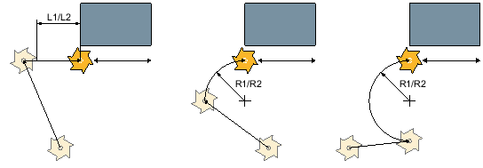

Eine programmierte Kontur kann mit Fräserradiuskorrektur rechts oder links bearbeitet werden. Dabei kann der Anwender verschiedene An- und Abfahrmodi sowie verschiedene An- und Abfahrstrategien wählen.
| Hinweis |
|
Der Schaftfräser verhält sich beim Anfasen wie ein Zentrierer mit einem Spitzenwinkel 90°. |
Die Kontur kann im Viertelkreis, Halbkreis oder in einer Geraden an- bzw. abgefahren werden.
Beim Viertel- oder Halbkreis muss der Radius der Fräsermittelpunktsbahn angegeben werden.
Bei der Geraden muss der Abstand der Fräseraußenkante zum Konturstartpunkt bzw. Konturendpunkt angegeben werden.
Es ist auch eine gemischte Programmierung möglich, z. B. Anfahren im Viertelkreis, Abfahren im Halbkreis.

L1 | Anfahrlänge |
L2 | Abfahrlänge |
R1 | Anfahrradius |
R2 | Abfahrradius |
An- und Abfahren der Kontur mit einer Geraden, im Viertelkreis und im Halbkreis
Sie können zwischen ebenen An-/Abfahren und räumlichen An-/Abfahren wählen:
Ebenes Anfahren:
es wird zuerst auf Tiefe und anschließend in der Bearbeitungsebene angefahren.
Räumliches Anfahren:
es wird in Tiefe und Bearbeitungsebene gleichzeitig angefahren.
Das Abfahren erfolgt in umgekehrter Reihenfolge.
Eine gemischte Programmierung ist möglich, z. B. Anfahren in der Bearbeitungsebene, Abfahren räumlich.
Für die Bearbeitungen Schruppen und Schlichten kann zwischen den Bearbeitungsarten "ebenenweise" und "helikal" gewählt werden. Diese Bearbeitungsarten sind für geschlossene und offene Konturen verwendbar.
Ebenenweise
Die programmierte Kontur wird ebenweise mit einer konstanten Tiefe bearbeitet, bis die programmierte Endtiefe erreicht ist.
Helikal
Bei der helikalen Bearbeitung erfolgt die Bearbeitung auf einer schrägen Bahn. Auf der programmierten Endtiefe wird die Kontur komplett umfahren, um Restmaterial zu entfernen. Offene Konturen werden "pendelnd" bearbeitet.
Eine programmierte Kontur kann auch auf der Mittelpunktsbahn bearbeitet werden, wenn die Radiuskorrektur ausgeschaltet wurde. Das An- und Abfahren ist hierbei auf einer Geraden oder Senkrechten möglich. Das senkrechte An-/Abfahren können Sie z. B. bei geschlossenen Konturen verwenden.